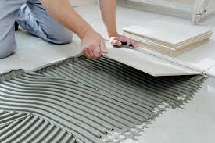
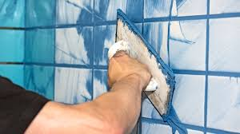

Postavljanje keramičkih pločica: Korak po korak vodič za DIY projekte
Postavljanje keramičkih pločica može biti izazovan, ali izuzetno zadovoljavajući DIY projekt. U ovom vodiču podijelit ćemo korake za uspješno postavljanje pločica, od pripreme podloge do završnog fugiranja. Slijedite naše savjete kako biste postigli profesionalni izgled vaših pločica.
1. Priprema podloge
Prvo, važno je pravilno pripremiti podlogu kako biste osigurali da pločice budu čvrsto postavljene:
- Čistite podlogu: Pobrinite se da je podloga čista i suha. Uklonite sve nečistoće, prašinu, i ostatke stare podloge.
- Izravnavanje: Ako podloga nije ravna, upotrijebite izravnavajući premaz kako biste stvorili ravnu površinu.
- Pronađite sredinu: Označite sredinu površine kako biste postigli simetrično polaganje pločica.
Priprema podloge
Hidroizolacija
2. Priprema pločica i ljepila
Odaberite pločice koje odgovaraju vašim potrebama, a zatim se pobrinite za pravilnu pripremu ljepila:
- Odabir pločica: Odaberite pločice koje odgovaraju stilu prostora i funkcionalnim zahtjevima. Možete birati između različitih veličina, boja i materijala.
- Priprema ljepila: Slijedite upute na pakiranju za miješanje ljepila. Pripazite da ne pripremite previše ljepila odjednom kako biste izbjegli njegovo stvrdnjavanje prije nego što ga iskoristite.
3. Postavljanje pločica
Sada kada ste pripremili podlogu i ljepilo, možete započeti s postavljanjem pločica:
- Nanijeti ljepilo: Upotrijebite zupčastu lopaticu za ravnomjerno nanošenje ljepila na podlogu. Pobrinite se da ljepilo bude ravnomjerno raspoređeno.
- Postavite pločice: Pločice postavite počevši od središta prema rubovima, ostavljajući male razmake između svake pločice za fugiranje.
- Provjera ravnosti: Povremeno provjerite ravnost pločica i poravnajte ih prema potrebi.

4. Fugiranje pločica
Fugiranje je završni korak u procesu postavljanja pločica:
- Priprema fuga: Pripremite fugnu masu prema uputama na pakiranju. Nanesite je ravnomjerno u praznine između pločica koristeći gumu za fugiranje.
- Uklonite višak fuga: Nakon što ste nanijeli fugnu masu, odmah uklonite višak pomoću vlažne spužve. Pazite da ne ostavite tragove na pločicama.

5. Završni koraci
- Čišćenje pločica: Nakon što je fuga suha, obrišite pločice čistom, suhom krpom kako biste uklonili sve ostatke fuga.
- Održavanje: Redovno čistite pločice kako biste ih održali u dobrom stanju i produžili njihov vijek trajanja.
Postavljanje keramičkih pločica može biti odličan DIY projekt koji će vašem prostoru dati novi izgled. Slijedite ove korake, budite precizni i uživajte u svom uspješno završenom projektu.